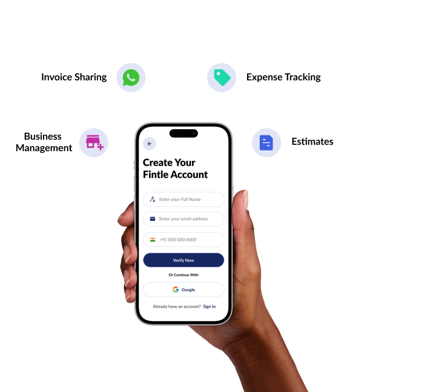

Just one more step to complete your account
Verify your email address to get started with all features.

Verify your email
We've sent a 6-digit verification code to user@example.com
Verify your email address to get started with all features.

We've sent a 6-digit verification code to user@example.com